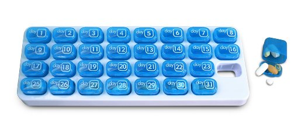

Which is Which?
June 25, 2015
So first of all, what is an array and what is a Hash? Well both of these have to do with organization. Both arrays and hashes are used to store objects. These objects can be anything ranging from numbers and strings to more arrays. But that's about all that they have in common. Now to get on to the differences.
Arrays
An array is used to store an ordered list of objects. The notation used are "[" and "]". The order of the objects begin with position 0. So technically, the first object in the array is labeled position 0. When thinking about an array, I imagine a pill organizer. One of those plastic boxes with numbered slots to organize which pill to take on which day. 
You find the pill you need by remembering the number it is associated with and looking for that numbered slot.
Below is an example of creating an array and calling the objects from certain slots. ">>" denotes what you input into your terminal and "=>" indicates what is returned to you.
>> array = ["Monday", 2, "Wednesday", 4]
=> ["Monday", 2, "Wednesday", 4]
>> array[0]
=> "Monday"
>> array[3]
=> 4
You called "Monday" by telling the computer to looking for it in slot position 0. You called "4" by telling it to looking for it in position 3.
Arrays work well when you just need a list. Maybe a grocery list and a list of names. It is also useful for arithmetic. You can perform simple arithmetic on an array of integers. Example below shows multipling each of the three object in the array by 5.
>> array = [1, 2, 3]
=> [1, 2, 3]
>> array.each{|x| puts x*5}
=> 5
10
15
[1, 2, 3]
Hashes
Hashes are used to store lists of paired objects called key/value pairs. The notation used are "{" and "}". There really is no order in hashes. All of the data inputted are in the order in which they were placed in the hash. Now going back to our pill container analogy, instead of each box labeled a number, it is labeled by an the "key" object and instead the slot is the "value" pill.
Below is an example of creating an hash and calling the each value by specifying which key it is connected to.
>> hash = {
"Hotdog" => 2.99,
"Burger" => 4.99,
"Soda" => 0.99,
"Popcorn" => 1.99
}
=> {"Hotdog"=>2.99, "Burger"=>4.99,"Soda"=>0.99,"Popcorn"=>1.99}
>> hash["Hotdog"]
=> 2.99
>> hash["Popcorn"]
=> 1.99
You looked for the key "Hotdog" and the computer gave you the value 2.99. Likewise, you looked for the key "Popcorn" and the computer gave you 1.99.
Hashes work well when order is not the focus but rather pairs of data. An example would be a list of names and ages. The example below shows printing a hash pair of names and ages after the computer adds 1 to the age value.
>> hash = {
"Anne" => 25,
"Jim" => 60,
"Roy" => 30
}
=> {"Anne"=>25, "Jim"=>60,"Roy"=>30}
>> hash.each{|x,y| puts "#{x}:#{(y+1)}"}
=> Anne:26
Jim:61
Roy:31
{"Anne"=>25, "Jim"=>60, "Roy"=>30}